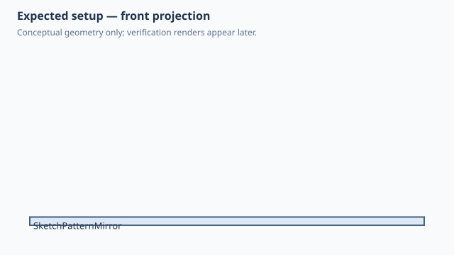

Forge model example
Associative sketch pattern and mirror
What this example makes
SolidCraft saves one Dog holes Sketch and one Clamp slots Sketch with associative pattern/mirror relationships. Baseline geometry contains 8 Ø8 holes and 8 straight Slots. No expanded set of independent seed commands is emitted.


Forge code
This is the complete Forge source used for this example.
"""Native associative Sketch pattern/mirror qualification.
One Circle seed and one Slot seed drive all repeated cut geometry. Pattern
counts and spacing stay as editable SolidCraft parameters.
"""
class SketchPatternMirror:
hole_diameter = 8.0
hole_columns = 4
hole_pitch = 25.0
slot_count = 2
slot_pitch = 50.0
SLOT_WIDTH = 8.0
def build(self):
board = Box(240, 160, 5, anchor=Anchor.BOTTOM)
with Sketch(name="Dog holes", on=board, parent=Anchor.TOP) as holes:
seed = holes.add(
Circle2D(d=self.hole_diameter),
offset=(-60, -45),
)
row = holes.rectangular_pattern(
seed,
count=self.hole_columns,
spacing=self.hole_pitch,
direction=Axis.X,
)
holes.mirror(row, axis=Axis.X)
board = board - holes.extrude(Depth.THROUGH_ALL)
with Sketch(name="Clamp slots", on=board, parent=Anchor.TOP) as slots:
seed = SlotCenterToCenter2D((20, 20), (40, 20), self.SLOT_WIDTH)
arm = slots.rectangular_pattern(
seed,
count=self.slot_count,
spacing=self.slot_pitch,
direction=Axis.X,
)
left = slots.mirror(arm, axis=Axis.Y)
slots.mirror(arm, axis=Axis.X)
slots.mirror(left, axis=Axis.X)
return board - slots.extrude(Depth.THROUGH_ALL)
SketchPatternMirror()
API used
seed = sketch.add(Circle2D(...)); sketch.rectangular_pattern(seed, ...); sketch.mirror(pattern, axis=Axis.X/Y); same flow for SlotCenterToCenter2D
Reference code
The same model is written independently with the reference libraries below. This makes it easier to compare modelling style and the resulting shape.
PythonSCAD
"""PythonSCAD geometry reference for sketch pattern/mirror qualification."""
from pythonscad import *
CUT_HEIGHT = 9
CUT_Z = -2
def straight_slot(cx, cy, center_separation=20, width=8):
bar = cube([center_separation, width, CUT_HEIGHT], center=True).translate(
[cx, cy, 2.5]
)
left = cylinder(d=width, h=CUT_HEIGHT).translate(
[cx - center_separation / 2, cy, CUT_Z]
)
right = cylinder(d=width, h=CUT_HEIGHT).translate(
[cx + center_separation / 2, cy, CUT_Z]
)
return bar | left | right
plate = cube([240, 160, 5], center=True).up(2.5)
cutters = None
for y in (-45, 45):
for x in (-60, -35, -10, 15):
hole = cylinder(d=8, h=CUT_HEIGHT).translate([x, y, CUT_Z])
cutters = hole if cutters is None else cutters | hole
for y in (-20, 20):
for x in (-80, -30, 30, 80):
slot = straight_slot(x, y)
cutters = slot if cutters is None else cutters | slot
model = plate - cutters

Reference result checks · PASS · 4/4 passed
| Check | Status | Expected | Measured | Detail |
|---|---|---|---|---|
| bounds | PASS | {'min': [-120.0, -80.0, 0.0], 'max': [120.0, 80.0, 5.0]} | {'min': [-120.0, -80.0, 0.0], 'max': [120.0, 80.0, 5.0]} | max difference 0.0 mm; allowed 0.5 mm |
| watertight | PASS | True | True | closed mesh |
| volume | PASS | 181578.76140340505 mm³ | 181733.50320859582 mm³ | difference 154.74180519077345 mm³; allowed 180.0 mm³ |
| surface distance probes | PASS | 48 surface measurements | 48/48 within tolerance | largest difference 0.116233 mm |
pyBOSL2
"""pyBOSL2 geometry reference for sketch pattern/mirror qualification."""
from pybosl2 import cuboid, cyl
CUT_HEIGHT = 9
def straight_slot(cx, cy, center_separation=20, width=8):
bar = cuboid([center_separation, width, CUT_HEIGHT]).translate([cx, cy, 2.5])
left = cyl(diameter=width, height=CUT_HEIGHT).translate(
[cx - center_separation / 2, cy, 2.5]
)
right = cyl(diameter=width, height=CUT_HEIGHT).translate(
[cx + center_separation / 2, cy, 2.5]
)
return bar | left | right
plate = cuboid([240, 160, 5]).up(2.5)
cutters = None
for y in (-45, 45):
for x in (-60, -35, -10, 15):
hole = cyl(diameter=8, height=CUT_HEIGHT).translate([x, y, 2.5])
cutters = hole if cutters is None else cutters | hole
for y in (-20, 20):
for x in (-80, -30, 30, 80):
slot = straight_slot(x, y)
cutters = slot if cutters is None else cutters | slot
model = plate - cutters

Reference result checks · PASS · 4/4 passed
| Check | Status | Expected | Measured | Detail |
|---|---|---|---|---|
| bounds | PASS | {'min': [-120.0, -80.0, 0.0], 'max': [120.0, 80.0, 5.0]} | {'min': [-120.0, -80.0, 0.0], 'max': [120.0, 80.0, 5.0]} | max difference 0.0 mm; allowed 0.5 mm |
| watertight | PASS | True | True | closed mesh |
| volume | PASS | 181578.76140340505 mm³ | 181733.5029449278 mm³ | difference 154.74154152275878 mm³; allowed 180.0 mm³ |
| surface distance probes | PASS | 48 surface measurements | 48/48 within tolerance | largest difference 0.116234 mm |
CadQuery
"""CadQuery geometry reference for sketch pattern/mirror qualification."""
import cadquery as cq
CUT_HEIGHT = 9
CUT_Z = -2
def circle_cut(x, y, diameter=8):
return (
cq.Workplane("XY")
.center(x, y)
.circle(diameter / 2)
.extrude(CUT_HEIGHT)
.translate((0, 0, CUT_Z))
)
def straight_slot(cx, cy, overall_length=28, width=8):
return (
cq.Workplane("XY")
.center(cx, cy)
.slot2D(overall_length, width)
.extrude(CUT_HEIGHT)
.translate((0, 0, CUT_Z))
)
plate = cq.Workplane("XY").box(240, 160, 5, centered=(True, True, False))
cutters = None
for y in (-45, 45):
for x in (-60, -35, -10, 15):
shape = circle_cut(x, y)
cutters = shape if cutters is None else cutters.union(shape)
for y in (-20, 20):
for x in (-80, -30, 30, 80):
shape = straight_slot(x, y)
cutters = shape if cutters is None else cutters.union(shape)
result = plate.cut(cutters)
model = cq.Assembly()
model.add(result, name="sketch_pattern_mirror")

Reference result checks · PASS · 4/4 passed
| Check | Status | Expected | Measured | Detail |
|---|---|---|---|---|
| bounds | PASS | {'min': [-120.0, -80.0, 0.0], 'max': [120.0, 80.0, 5.0]} | {'min': [-120.0, -80.0, 0.0], 'max': [120.0, 80.0, 5.0]} | max difference 0.0 mm; allowed 0.5 mm |
| watertight | PASS | True | True | closed mesh |
| volume | PASS | 181578.76140340505 mm³ | 181580.42765337252 mm³ | difference 1.6662499674712308 mm³; allowed 180.0 mm³ |
| surface distance probes | PASS | 48 surface measurements | 48/48 within tolerance | largest difference 0.00124467 mm |
build123d
"""build123d geometry reference for sketch pattern/mirror qualification."""
from build123d import (
Align,
Axis,
Box,
BuildPart,
BuildSketch,
Circle,
Locations,
Mode,
SlotCenterToCenter,
extrude,
)
bottom = (Align.CENTER, Align.CENTER, Align.MIN)
with BuildPart() as model:
Box(240, 160, 5, align=bottom)
with BuildSketch(model.faces().sort_by(Axis.Z)[-1]):
with Locations(*[
(x, y)
for y in (-45, 45)
for x in (-60, -35, -10, 15)
]):
Circle(4)
with Locations(*[
(x, y)
for y in (-20, 20)
for x in (-80, -30, 30, 80)
]):
SlotCenterToCenter(20, 8)
extrude(amount=-5, mode=Mode.SUBTRACT)

Reference result checks · PASS · 4/4 passed
| Check | Status | Expected | Measured | Detail |
|---|---|---|---|---|
| bounds | PASS | {'min': [-120.0, -80.0, 0.0], 'max': [120.0, 80.0, 5.0]} | {'min': [-120.0, -80.0, 0.0], 'max': [120.0, 80.0, 5.0]} | max difference 0.0 mm; allowed 0.5 mm |
| watertight | PASS | True | True | closed mesh |
| volume | PASS | 181578.76140340505 mm³ | 181580.42765337252 mm³ | difference 1.6662499674712308 mm³; allowed 180.0 mm³ |
| surface distance probes | PASS | 48 surface measurements | 48/48 within tolerance | largest difference 0.00124467 mm |
How Forge builds it in SolidCraft
Forge binds the real native curves returned by the seed profile, feeds those ids into sketch.pattern.rectangular, binds the pattern curves, and feeds those into sketch.mirror. User Python never contains SolidCraft-generated ids.
Show generated SolidCraft commands
parameters.add
parameters.add
parameters.add
parameters.add
parameters.add
solid.box
model.faces
sketch.create
sketch.circle.center
sketch.pattern.rectangular
sketch.mirror
sketch.finish
solid.extrude
model.faces
sketch.create
sketch.slot.center_to_center
sketch.pattern.rectangular
sketch.mirror
sketch.mirror
sketch.mirror
sketch.finish
solid.extrudeSolidCraft result
Built and measured with SolidCraft 0.42.0. Open the measurement details to inspect body sizes and editable parameters.
patterns mutated · 1 bodies
Editable parameters
| Name | Value |
|---|---|
hole_diameter | 10.0 |
hole_columns | 4.0 |
hole_pitch | 30.0 |
slot_count | 2.0 |
slot_pitch | 30.0 |
d4 | 10.0 |
Body size
| Body | Minimum | Maximum |
|---|---|---|
| SketchPatternMirror | [-120, -80, 0] | [120, 80, 5] |
Original model · 1 bodies
Editable parameters
| Name | Value |
|---|---|
hole_diameter | 8.0 |
hole_columns | 4.0 |
hole_pitch | 25.0 |
slot_count | 2.0 |
slot_pitch | 50.0 |
d4 | 8.0 |
Body size
| Body | Minimum | Maximum |
|---|---|---|
| SketchPatternMirror | [-120, -80, 0] | [120, 80, 5] |
Semantic validation · PASS · 13/13 checks passed
| Status | Level | Check | Expected | Actual |
|---|---|---|---|---|
| PASS | GEOMETRY | declared target geometry | [{"label": "SketchPatternMirror", "min": [-120, -80, 0], "max": [120, 80, 5]}] | [{"min": [-120.0, -80.0, 0.0], "max": [120.0, 80.0, 5.000000000000001]}] |
| PASS | GEOMETRY | single patterned plate body | 1 | 1 |
| PASS | GEOMETRY | baseline seed/pattern parameters | {"hole_columns": 4.0, "hole_diameter": 8.0, "hole_pitch": 25.0, "slot_count": 2.0, "slot_pitch": 50.0} | {"hole_columns": 4.0, "hole_diameter": 8.0, "hole_pitch": 25.0, "slot_count": 2.0, "slot_pitch": 50.0} |
| PASS | GEOMETRY | baseline associative cuts remove expected material | 181578.76140340505 | 181578.7614030834 |
| PASS | GEOMETRY | one Dog holes and one Clamp slots sketch | ["Dog holes", "Clamp slots"] | ["Clamp slots", "Dog holes"] |
| PASS | GEOMETRY | both associative sketches solve | {"Dog holes": "solved", "Clamp slots": "solved"} | {"Dog holes": "solved", "Clamp slots": "solved"} |
| PASS | GEOMETRY | pattern/mirror geometry stays inside two Sketch features | [["BoxFeature", "Box1"], ["Sketch", "Dog holes"], ["ExtrudeFeature", "Dog holes"], ["Sketch", "Clamp slots"], ["ExtrudeFeature", "Clamp slots"]] | [["BoxFeature", "Box1"], ["Sketch", "Dog holes"], ["ExtrudeFeature", "Dog holes"], ["Sketch", "Clamp slots"], ["ExtrudeFeature", "Clamp slots"]] |
| PASS | SAVED_DESIGN | declared mutation target geometry | [{"label": "SketchPatternMirror", "min": [-120, -80, 0], "max": [120, 80, 5]}] | [{"min": [-120.0, -80.0, 0.0], "max": [120.0, 80.0, 5.000000000000001]}] |
| PASS | SAVED_DESIGN | saved pattern parameters changed | {"hole_columns": 4.0, "hole_diameter": 10.0, "hole_pitch": 30.0, "slot_count": 2.0, "slot_pitch": 30.0} | {"hole_columns": 4.0, "hole_diameter": 10.0, "hole_pitch": 30.0, "slot_count": 2.0, "slot_pitch": 30.0} |
| PASS | SAVED_DESIGN | saved design keeps 8 holes and 8 slots after associative edits | 180447.78804811274 | 180447.78805063973 |
| PASS | SAVED_DESIGN | saved spacing edits move the repeated sketch geometry | {"different_from_baseline_x_by_more_than_mm": 0.01, "baseline_x": 0.24914221233465159} | 0.3264371540624268 |
| PASS | SAVED_DESIGN | mutation keeps the same two solved Sketch features | {"Dog holes": "solved", "Clamp slots": "solved"} | {"Dog holes": "solved", "Clamp slots": "solved"} |
| PASS | SAVED_DESIGN | mutation preserves the two-sketch history | [["BoxFeature", "Box1"], ["Sketch", "Dog holes"], ["ExtrudeFeature", "Dog holes"], ["Sketch", "Clamp slots"], ["ExtrudeFeature", "Clamp slots"]] | [["BoxFeature", "Box1"], ["Sketch", "Dog holes"], ["ExtrudeFeature", "Dog holes"], ["Sketch", "Clamp slots"], ["ExtrudeFeature", "Clamp slots"]] |
Visual result
Actual is the SolidCraft render. Goal shows the expected shape. Overlay places both on top of each other so differences are easy to see.
Top

Current SolidCraft top view

Expected geometry in the same top view

Expected geometry over the actual top view
Front

Current SolidCraft front view

Expected geometry in the same front view

Expected geometry over the actual front view
Iso
Current SolidCraft iso view

Expected geometry in the same iso view

Expected geometry over the actual iso view
Show extra saved-render views
Right

Current SolidCraft right view

Expected geometry in the same right view

Expected geometry over the actual right view
Technical test details
Integration tests
PASS — these example-owned tests prove the generated SolidCraft command contract before native execution.
Geometry checks
These are the sizes and measurement points used by the automated checks.
| Body | Minimum | Maximum |
|---|---|---|
| SketchPatternMirror | [-120, -80, 0] | [120, 80, 5] |
- Is the size check enough for this model? No — The Circle and Slot cuts do not change the plate envelope. Volume, 3D wall probes and saved-design mutation are required to prove the associative sketch pattern/mirror result.
- Views checked: top, front, iso
- Internal features checked: 16
- Expected volume: 181578.76140340505 mm³ (±180.0 mm³)
- Closed solid expected: True
- Surface points checked: 48
Show all geometry check points
Internal features
- hole 1,1: centre
[-60.0, -45.0], diameter 8.0 mm, Z[0.0, 5.0] - hole 2,1: centre
[-35.0, -45.0], diameter 8.0 mm, Z[0.0, 5.0] - hole 3,1: centre
[-10.0, -45.0], diameter 8.0 mm, Z[0.0, 5.0] - hole 4,1: centre
[15.0, -45.0], diameter 8.0 mm, Z[0.0, 5.0] - hole 1,2: centre
[-60.0, 45.0], diameter 8.0 mm, Z[0.0, 5.0] - hole 2,2: centre
[-35.0, 45.0], diameter 8.0 mm, Z[0.0, 5.0] - hole 3,2: centre
[-10.0, 45.0], diameter 8.0 mm, Z[0.0, 5.0] - hole 4,2: centre
[15.0, 45.0], diameter 8.0 mm, Z[0.0, 5.0] - slot 1,1: width 8.0 mm, 2 centre-line points, Z
[0.0, 5.0] - slot 2,1: width 8.0 mm, 2 centre-line points, Z
[0.0, 5.0] - slot 3,1: width 8.0 mm, 2 centre-line points, Z
[0.0, 5.0] - slot 4,1: width 8.0 mm, 2 centre-line points, Z
[0.0, 5.0] - slot 1,2: width 8.0 mm, 2 centre-line points, Z
[0.0, 5.0] - slot 2,2: width 8.0 mm, 2 centre-line points, Z
[0.0, 5.0] - slot 3,2: width 8.0 mm, 2 centre-line points, Z
[0.0, 5.0] - slot 4,2: width 8.0 mm, 2 centre-line points, Z
[0.0, 5.0]
Surface measurement points
- hole 1,1 at z=0.5: point
[-60.0, -45.0, 0.5]→ 4.0 mm (±0.3 mm) - hole 1,1 at z=2.5: point
[-60.0, -45.0, 2.5]→ 4.0 mm (±0.3 mm) - hole 1,1 at z=4.5: point
[-60.0, -45.0, 4.5]→ 4.0 mm (±0.3 mm) - hole 2,1 at z=0.5: point
[-35.0, -45.0, 0.5]→ 4.0 mm (±0.3 mm) - hole 2,1 at z=2.5: point
[-35.0, -45.0, 2.5]→ 4.0 mm (±0.3 mm) - hole 2,1 at z=4.5: point
[-35.0, -45.0, 4.5]→ 4.0 mm (±0.3 mm) - hole 3,1 at z=0.5: point
[-10.0, -45.0, 0.5]→ 4.0 mm (±0.3 mm) - hole 3,1 at z=2.5: point
[-10.0, -45.0, 2.5]→ 4.0 mm (±0.3 mm) - hole 3,1 at z=4.5: point
[-10.0, -45.0, 4.5]→ 4.0 mm (±0.3 mm) - hole 4,1 at z=0.5: point
[15.0, -45.0, 0.5]→ 4.0 mm (±0.3 mm) - hole 4,1 at z=2.5: point
[15.0, -45.0, 2.5]→ 4.0 mm (±0.3 mm) - hole 4,1 at z=4.5: point
[15.0, -45.0, 4.5]→ 4.0 mm (±0.3 mm) - hole 1,2 at z=0.5: point
[-60.0, 45.0, 0.5]→ 4.0 mm (±0.3 mm) - hole 1,2 at z=2.5: point
[-60.0, 45.0, 2.5]→ 4.0 mm (±0.3 mm) - hole 1,2 at z=4.5: point
[-60.0, 45.0, 4.5]→ 4.0 mm (±0.3 mm) - hole 2,2 at z=0.5: point
[-35.0, 45.0, 0.5]→ 4.0 mm (±0.3 mm) - hole 2,2 at z=2.5: point
[-35.0, 45.0, 2.5]→ 4.0 mm (±0.3 mm) - hole 2,2 at z=4.5: point
[-35.0, 45.0, 4.5]→ 4.0 mm (±0.3 mm) - hole 3,2 at z=0.5: point
[-10.0, 45.0, 0.5]→ 4.0 mm (±0.3 mm) - hole 3,2 at z=2.5: point
[-10.0, 45.0, 2.5]→ 4.0 mm (±0.3 mm) - hole 3,2 at z=4.5: point
[-10.0, 45.0, 4.5]→ 4.0 mm (±0.3 mm) - hole 4,2 at z=0.5: point
[15.0, 45.0, 0.5]→ 4.0 mm (±0.3 mm) - hole 4,2 at z=2.5: point
[15.0, 45.0, 2.5]→ 4.0 mm (±0.3 mm) - hole 4,2 at z=4.5: point
[15.0, 45.0, 4.5]→ 4.0 mm (±0.3 mm) - slot 1,1 at z=0.5: point
[-80.0, -20.0, 0.5]→ 4.0 mm (±0.3 mm) - slot 1,1 at z=2.5: point
[-80.0, -20.0, 2.5]→ 4.0 mm (±0.3 mm) - slot 1,1 at z=4.5: point
[-80.0, -20.0, 4.5]→ 4.0 mm (±0.3 mm) - slot 2,1 at z=0.5: point
[-30.0, -20.0, 0.5]→ 4.0 mm (±0.3 mm) - slot 2,1 at z=2.5: point
[-30.0, -20.0, 2.5]→ 4.0 mm (±0.3 mm) - slot 2,1 at z=4.5: point
[-30.0, -20.0, 4.5]→ 4.0 mm (±0.3 mm) - slot 3,1 at z=0.5: point
[30.0, -20.0, 0.5]→ 4.0 mm (±0.3 mm) - slot 3,1 at z=2.5: point
[30.0, -20.0, 2.5]→ 4.0 mm (±0.3 mm) - slot 3,1 at z=4.5: point
[30.0, -20.0, 4.5]→ 4.0 mm (±0.3 mm) - slot 4,1 at z=0.5: point
[80.0, -20.0, 0.5]→ 4.0 mm (±0.3 mm) - slot 4,1 at z=2.5: point
[80.0, -20.0, 2.5]→ 4.0 mm (±0.3 mm) - slot 4,1 at z=4.5: point
[80.0, -20.0, 4.5]→ 4.0 mm (±0.3 mm) - slot 1,2 at z=0.5: point
[-80.0, 20.0, 0.5]→ 4.0 mm (±0.3 mm) - slot 1,2 at z=2.5: point
[-80.0, 20.0, 2.5]→ 4.0 mm (±0.3 mm) - slot 1,2 at z=4.5: point
[-80.0, 20.0, 4.5]→ 4.0 mm (±0.3 mm) - slot 2,2 at z=0.5: point
[-30.0, 20.0, 0.5]→ 4.0 mm (±0.3 mm) - slot 2,2 at z=2.5: point
[-30.0, 20.0, 2.5]→ 4.0 mm (±0.3 mm) - slot 2,2 at z=4.5: point
[-30.0, 20.0, 4.5]→ 4.0 mm (±0.3 mm) - slot 3,2 at z=0.5: point
[30.0, 20.0, 0.5]→ 4.0 mm (±0.3 mm) - slot 3,2 at z=2.5: point
[30.0, 20.0, 2.5]→ 4.0 mm (±0.3 mm) - slot 3,2 at z=4.5: point
[30.0, 20.0, 4.5]→ 4.0 mm (±0.3 mm) - slot 4,2 at z=0.5: point
[80.0, 20.0, 0.5]→ 4.0 mm (±0.3 mm) - slot 4,2 at z=2.5: point
[80.0, 20.0, 2.5]→ 4.0 mm (±0.3 mm) - slot 4,2 at z=4.5: point
[80.0, 20.0, 4.5]→ 4.0 mm (±0.3 mm)
Saved-design test
Checked in the saved model. Change hole_diameter 8->10 mm, hole_pitch 25->30 mm and slot_pitch 50->30 mm in the saved .sc design. Without rerunning Python all existing pattern and mirror copies must follow the changed seed and spacing. Pattern counts remain native editable parameters, but SolidCraft 0.42 mirrors a fixed selected entity set and does not automatically adopt new entities added later by an upstream count change.
Raw test files
- Forge fixture source
- PythonSCAD reference source
- pyBOSL2 reference source
- CadQuery reference source
- build123d reference source
- Generated command JSON in build output
- results.json
- measurements-patterns-mutated.json
- measurements.json
- joint-inspect.json
- model-patterns-mutated.sc
- model.sc
- model.step
- qualification-result.json
- validation.json
- visual-validation.json
- camera-front.json
- camera-iso.json
- camera-right.json
- camera-top.json
- Native snapshot: model.png
- Native snapshot: model-top.png
- Native snapshot: goal-top.png
- Native snapshot: overlay-top.png
- Native snapshot: model-front.png
- Native snapshot: goal-front.png
- Native snapshot: overlay-front.png
- Native snapshot: visual-diff-front.png
- Native snapshot: model-right.png
- Native snapshot: goal-right.png
- Native snapshot: overlay-right.png
- Native snapshot: visual-diff-right.png
- Native snapshot: model-iso.png
- Native snapshot: goal-iso.png
- Native snapshot: overlay-iso.png
- Native snapshot: visual-diff-iso.png
- Reference evidence: reference-pythonscad/result.json
- Reference evidence: reference-pythonscad/model.stl
- Reference evidence: reference-pythonscad/model-front.png
- Reference evidence: reference-pythonscad/model-right.png
- Reference evidence: reference-pythonscad/model-iso.png
- Reference evidence: reference-pybosl2/result.json
- Reference evidence: reference-pybosl2/model.stl
- Reference evidence: reference-pybosl2/model-front.png
- Reference evidence: reference-pybosl2/model-right.png
- Reference evidence: reference-pybosl2/model-iso.png
- Reference evidence: reference-cadquery/result.json
- Reference evidence: reference-cadquery/model.stl
- Reference evidence: reference-cadquery/model-front.png
- Reference evidence: reference-cadquery/model-right.png
- Reference evidence: reference-cadquery/model-iso.png
- Reference evidence: reference-build123d/result.json
- Reference evidence: reference-build123d/model.stl
- Reference evidence: reference-build123d/model-front.png
- Reference evidence: reference-build123d/model-right.png
- Reference evidence: reference-build123d/model-iso.png


Reference documentation
- SolidCraft: The native saved design is the source of truth for the associative sketch pattern/mirror relationships and their saved-design mutation.
- PythonSCAD: Independent final geometry confirms the repeated cuts without relying on Forge's command lowering.
- CadQuery: Independent final geometry confirms the expected hole and Slot positions.
- build123d: Independent final geometry confirms the expected profile repetition and cut result.